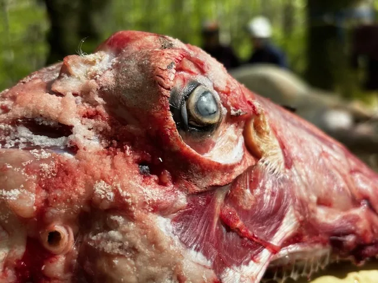

Školarci, janjetina i Ličko
...Nakon Marinovog dirljivog govora i dobivenih poklona, Ličko je pokušao sakriti emocije, ali ljubav se definitivno osjetila…

Napisala: Klara Filakovity
Fotografije: opet nisu naveli autora
Kažu da svemu lijepom brzo dođe kraj pa je tako nakon divnih 7 tjedana došao i posljednji vikend 54. speleološke škole. Posljednji školski vikend za neke je počeo u petak, kada je Filip prvi na Filipovom kuku ugledao snijeg. Snijeg se već u ranim subotnjim satima otopio i došlo je sunce!
To jutro su se čvorovi radili na sve strane - neki pri postavljanju jame, neki u autima na putu ka Velebitu, neki u bakinoj kući uz kolače, a neki pri zavezivanju janjadi…
Sauronovo oko budno prati vezivanje čvorova na sebi
Oko 11 sati ujutro svi koji nisu pisali pismeni dio ispita, su pisali (i unatoč par nepravedno skinutih bodova, svi prošli). Zatim smo se obukli u opremu i čekali da nas jugoslavenska tekica našeg Velikog Vođe podijeli u grupe. Nakon doručka neki su sa svojim instruktorom otišli u jamu, a ostali smo išli polagati čvorove i prvu pomoć.
Kako smo mi završavali ta dva dijela ispita, drugi su izlazili iz jame i pridruživali nam se u promatranju okretanja janjaca. Dok su se neki penjali na Kuk, nas par je sjedilo oko vatre, uz razgovore i naravno, masaže… A onda, kad smo već kod Čede, on i njegova mrkva oko vrata su nas nekoliko odveli na mini izlet do izvora u šumi.
Pretraga za novčanikom ili dokumentima Metoda mrkve i batine u praktičnoj primjeni
Osim toga, imali smo i čast uživanja u Edinoj filmskoj večeri u šumi kada smo gledali odlične dokumentarce o našem SOV-u...
Noć je tekla u dobroj atmosferi, smijehu i ukusnoj hrani, a kada smo osjetili da je trenutak svima taman, odlučili smo udijeliti par poklona našem Vođi u znak zahvalnosti što nas je trpio podnosio tolerirao usmjeravao ovih divnih 7 tjedana. Nakon Marinovog dirljivog govora i dobivenih poklona, Ličko je pokušao sakriti emocije, ali ljubav se definitivno osjetila…
Poslije nježnih trenutaka svi smo se vratili aktivnostima oko vatre, a daleko najglasnija je bila traženje 'Jeeegerchicha' od strane našeg rođendanskog slavljenika Chajka.
Svima najzanimljiviji dio filma o jami Velebiti Filmski kritičar za vrijeme projekcije
Jegerčić i mnogi drugi bili su razlog zašto smo se probudili osjećajući se izvrćeno kao pojedeni janjčići, a ulazak u jamu je neke od nas tek čekao... Nakon doručka jedni su otišli na polaganje čvorova i prve pomoći, a ostatak u otvor Crnog Vrila. Moja magična instruktorica je bila Gorana Perić zvana Goga. Uz Gogu, malo smijeha, hladnu vodu i duboki mrak jame, mamurluk je otišao i osjećala sam čistu sreću… Nakon izlaska i razmišljanja o tome kako se napokon možemo opustiti, kao i uvijek, Vođa je našao nešto čime će nas okupirati i poslao nas Deji. Dejo nas je učio tucati, bušiti, zabijati - ilitiga postavljati jame te smo shvatili koliko je i to zabavno!
Dejo nas je naučio tucati, bušiti i zabijati
Nakon toga smo svi još malo uživali oko vatre, a u kasnim poslijepodnevnim satima počeli smo raspremati kamp. Zadnji vikend kao školarci, a prvi kao pripravnici, odlučili smo završiti u hostelu u Baškim Oštarijama gdje smo se još malo družili oko stola uz iće, piće i naravno osmjehe.
Jutro after i konačno... ...finilo je!
I tako, možda svemu lijepom mora doći kraj, ali znamo da je ovo tek početak naših SO pustolovina...
U ime svih školaraca veliko hvala instruktorima! Hvala vam na predavanjima, na strpljenju i na tome što ste svaki na svoj posebni način uvijek bili tu za nas!
Hvala i VV Ličku što nam je začinjavao dane sa svojim rasparanim hlačama na guzovima i milim riječima koje smo nekad morali čut.
A i hvala bogu, što nam se više neće naređivati da odemo skupljat drva… Sada to znamo i sami!
(a uskoro će doći i novi školarci :))